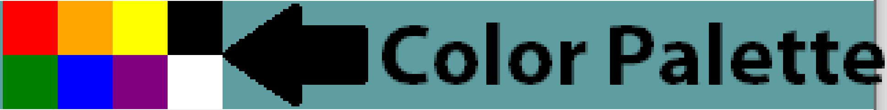

Paint Project
Overview
A simplified version of the Microsoft Paint application in Java. Utilized JavaFX GUI and various
JavaFX shapes, paints, MouseEvents, and collections to achieve functional drawing application with
options to choose paint color, brush size, use paint bucket and erase.
Structure of GUI
The GUI is constructed from a base of a JavaFX Border Pane object. Border Panes allow one to set the
different sections (Top, Bottom, Left, Right, Center) of the pane with different objects. On this Border
Pane are two custom JavaFX objects. The center painting area of the screen is a custom Canvas object which is
extended from the basic JavaFX Pane class. The top portion of the screen is a custom ToolsBar object which is
extended from the JavaFX HBox class. Within the ToolsBar there is another custom ColorPalette object which is
extended from the JavaFX GridPane class.
Application
The stage is set by first creating a borderpane and setting the center to a Canvas object and the
top to a ToolsBar object. Then a JavaFX Scene object is created with the borderpane and the dimensions
of the scene. Finally the scene is set in the primaryStage which adds all the elements of the application
to the GUI to be displayed to the user.
Custom Objects
Tools Bar

The ToolsBar extends the JavaFX HBox. The HBox is a pane that displays its children in a single
horizontal row. The ToolsBar arranges the elements in the order they are added in the
getChildren().addAll() method.
The first element is the clear button which clears all the children from the canvas essentially
wiping clean the canvas.
The next two elements are the text field box and its label for controlling the pen size,
defaulted to 8.
The final element of the ToolsBar is the custom ColorPalette object which displays 8 different
colors to choose from as the color for the pen.
Color Palette

The ColorPalette extends the JavaFX GridPane. The GridPane is a pane that displays its children
in a flexible grid of rows and columns. The various colors are displayed as rectangle objects with
different colors. These rectangles are added to the ColorPalette and displayed for the user to
choose from. When the user clicks on a colored rectangle the color of the rectangle is checked
and that color is set as the current pen color.

Canvas
The Canvas is where the actual "painting" takes place. The Canvas is extended from the basic JavaFX
pane class as this class is the most flexible in terms of placing objects anywhere on the pane.
Postman/Testing
To test the functionality of the Listing Webservice I used Postman,
a REST Client able to send different types of HTTP requests to interact with the REST API webservice. Through
the Postman extension I sent post, get and delete requests to the different paths of the webservice.